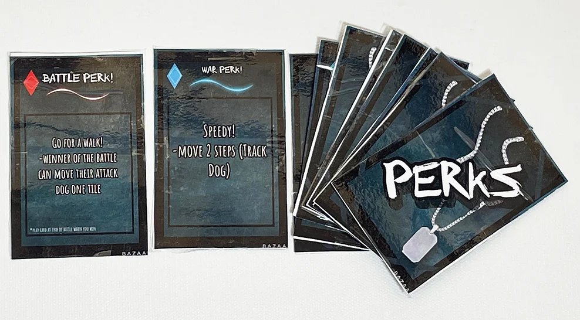
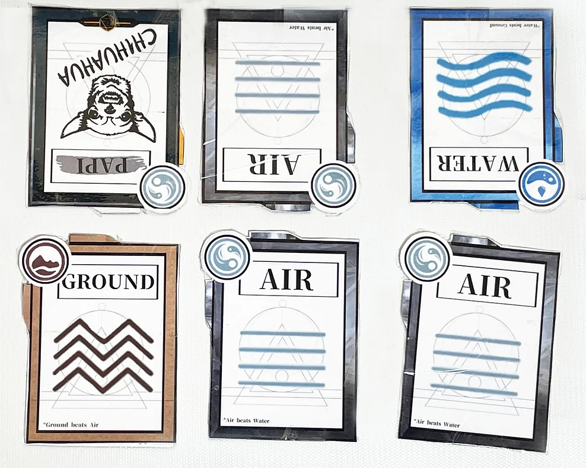
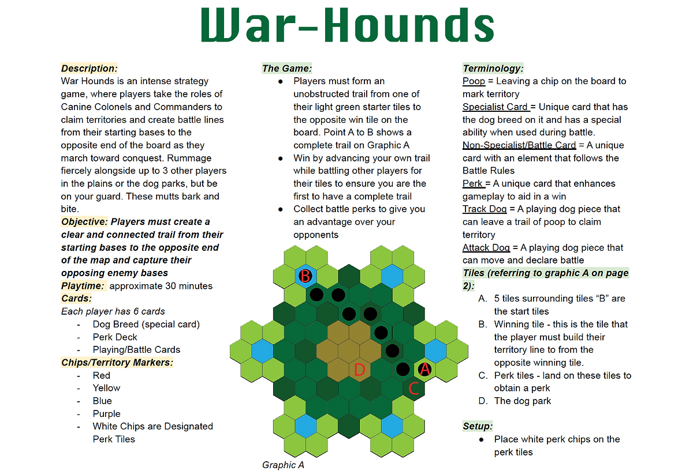
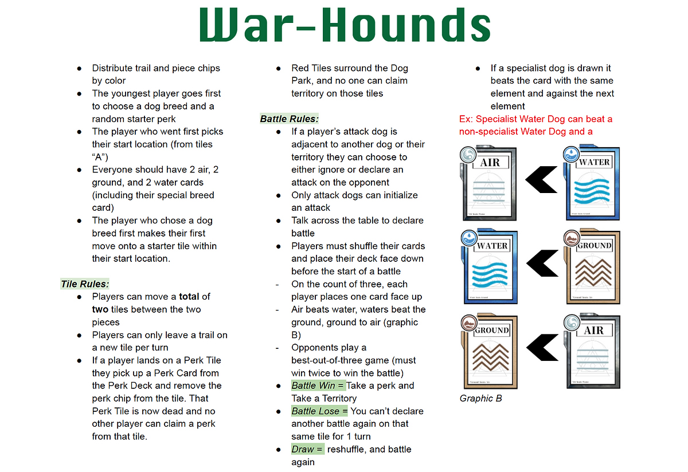
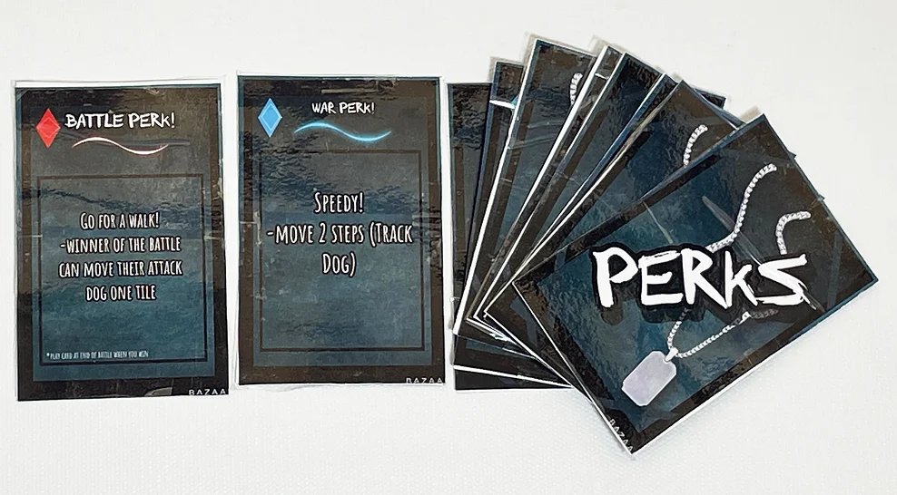
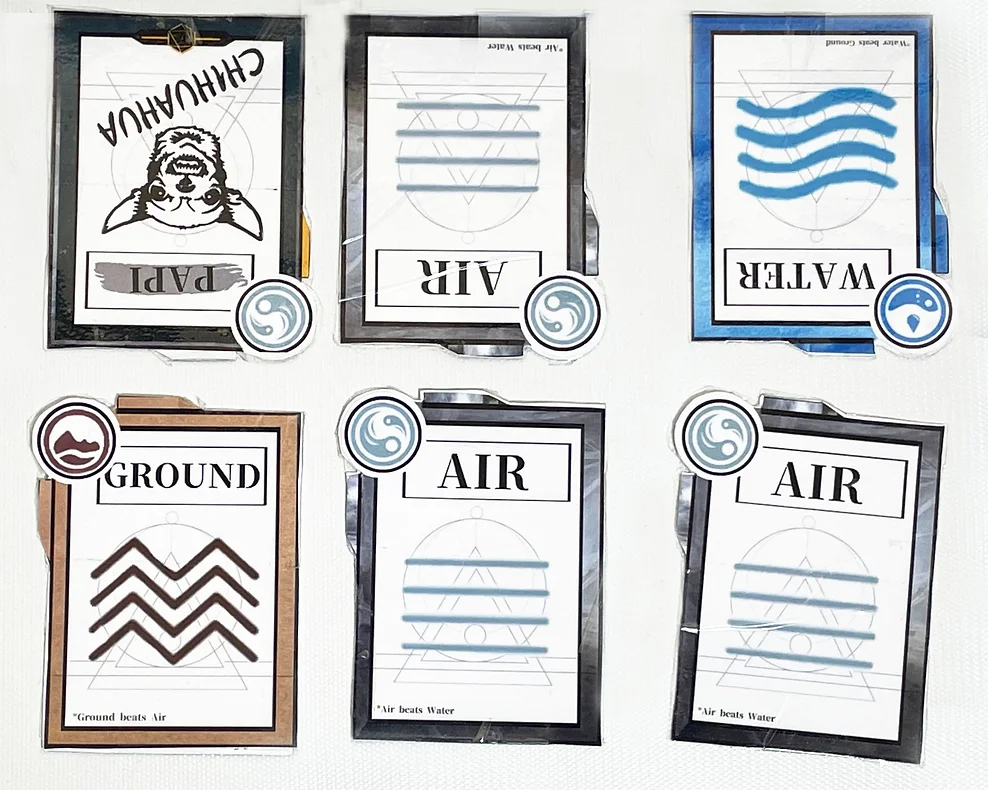
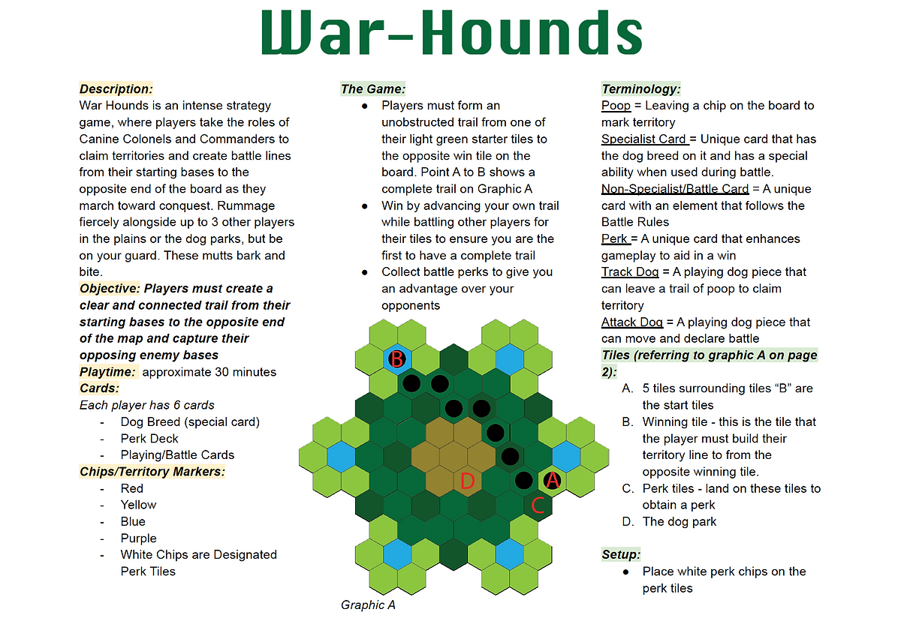
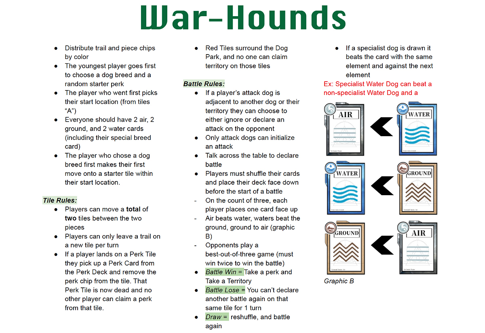

Warhounds is a fast-paced multiplayer board game where players compete against each other to hold land and fight their way across the board. It can be played by 4-6 players and takes around 30 minutes from end to end. I worked with a team of 3 game designers to create this exciting and captivating analog board game.
Project Info
My Role
Tools used
There is a general standard for in-depth game analysis. A framework developed by Robin Hunicke, Marc LeBlanc, and Robert Zubek called the MDA framework, which stands for Mechanics, Dynamics, and Aesthetics. It is used to break game design and consumption into distinct categories:
Giving proper consideration to each element of the MDA framework while making our game would help us achieve what is called Cognitive flow. Cognitive Flow is the idea of a game inducing a heightened level of engagement usually based on a perfect ratio of required skill to the challenge at hand. In other words, being in the zone.
While brainstorming we struggled not to go overboard. By the end of our first brainstorming session, we had come up with a game that was far too complicated. We had a sea of ideas and needed to boil them down to just a few. After realizing how unrealistic we were being, we set some criteria to help us stick to something comprehendible and achievable.
As soon as we had a general idea of the game, we made some prototypes. The faster we could try playing the game ourselves, the faster we could continue to adjust and improve everything.
What we learned from our initial prototypes:

After making more improvements, we had other Game-Design and UX peers play our game. We handed them our list of rules, the prototype board, and materials, and observed without providing any further guidance. After a bit of struggle, they ultimately got the gist of the game, which was a great sign we were headed in the right direction.
What we learned:
 







This was a super fun project and we were extremely happy with how it came out. This was a great learning experience for me, it was my first time working with a group of non-UX designers on a project. The different perspectives from different industry backgrounds gave us a huge advantage and allowed us to work efficiently. War Hounds has become a favorite amongst our friends and family. It's been a ton of fun to play. There are few things more enjoyable then seeing people truly enjoy something you worked hard on to create. We are currently looking into working towards publication.